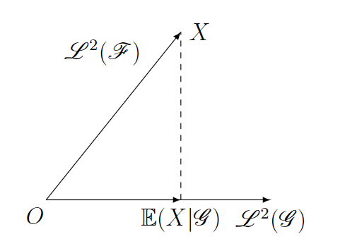

条件期望的几何意义
设\((\Omega,\mathscr{F},\mathbb{P})\)是概率空间, \(\mathscr{G}\subset\mathscr{F}\)是子\(\sigma\)-域. 考虑随机变量空间(在这里考虑的是二次可积空间, 是为了引入范数和内积. ) \[ \begin{aligned} &\mathscr{L}^2(\mathscr{F})=\{X\in\mathscr{L}^2(\Omega):\text{$X$是$\mathscr{F}$-可测的}\}, \\ &\mathscr{L}^2(\mathscr{G})=\{X\in\mathscr{L}^2(\Omega):\text{$X$是$\mathscr{G}$-可测的}\}. \end{aligned} \] 若随机变量\(X\in\mathscr{L}^2(\mathscr{G})\), 也即\(X\)是\(\mathscr{G}\)-可测的, 根据\(\mathscr{G}\subset\mathscr{F}\), 知 \[ X^{-1}(\mathscr{B}_{\mathbb{R}})\subset\mathscr{G}\subset\mathscr{F}, \] 从而\(X\)一定是\(\mathscr{F}\)-可测的, 这说明了\(\mathscr{L}^2(\mathscr{G})\subset\mathscr{L}^2(\mathscr{F})\). 在空间\(\mathscr{L}^2(\mathscr{F})\)上, 赋予内积 \[ (X, Y):=\left(\int_{\Omega}XY\mathrm{d}\mathbb{P}\right)^{\frac{1}{2}}=\sqrt{\mathbb{E}(XY)},\quad\forall X, Y\in\mathscr{L}^2(\mathscr{F}), \] 则\(\left(\mathscr{L}^2(\mathscr{F}),(\cdot,\cdot)\right)\)为Hilbert空间; 再考虑内积\((\cdot,\cdot)\)诱导的范数 \[ \|X\|:=\sqrt{(X, X)}=\sqrt{\mathbb{E}(X^2)}, \quad\forall X\in\mathscr{L}^2(\mathscr{F}). \] 在\(\mathscr{L}^2(\mathscr{G})\)上, 也赋予相同的内积和范数.
在上面的记号的基础上, 考虑随机变量\(X\in\mathscr{L}^2(\mathscr{F})\), 并记\(X\)关于\(\mathscr{G}\)的条件期望为\(\mathbb{E}(X|\mathscr{G})\). 根据定义知\(\mathbb{E}(X|\mathscr{G})\in\mathscr{L}^2(\mathscr{G})\). 在这里, 我们来说明: \(\mathbb{E}(X|\mathscr{G})\)实质上是\(X\)在空间\(\mathscr{L}^2(\mathscr{G})\)上的投影, 从而条件期望\(\mathbb{E}(\cdot|\mathscr{G})\)实质上是从空间\(\mathscr{L}^2(\mathscr{F})\)到空间\(\mathscr{L}^2(\mathscr{G})\)的投影.

命题1 设\(X\in\mathscr{L}^2(\mathscr{F})\), \(\mathscr{G}\subset\mathscr{F}\)是子\(\sigma\)-域, 则\(\mathbb{E}(X|\mathscr{G})\in\mathscr{L}^2(\mathscr{G})\).
证明 根据定义知\(\mathbb{E}(X|\mathscr{G})\)是\(\mathscr{G}\)-可测的. 又根据\(X\in\mathscr{L}^2(\mathscr{F})\), 应用条件期望的Jensen不等式得 \[ \mathbb{E}\left[\mathbb{E}(X|\mathscr{G})^2\right]\le\mathbb{E}\left[\mathbb{E}(X^2|\mathscr{G})\right]=\mathbb{E} X^2<+\infty, \] 这便说明了\(\mathbb{E}(X|\mathscr{G})\in\mathscr{L}^2(\mathscr{G})\).
引理2 设\(X, Y\)是\((\Omega,\mathscr{F},\mathbb{P})\)上的随机变量, \(X\)是\(\mathscr{G}\)-可测的, 则有 \[ \mathbb{E}(XY|\mathscr{G})=X\cdot\mathbb{E}(Y|\mathscr{G}). \]
证明 首先, 设\(X=I_B\), 其中\(B\in\mathscr{G}\), 对任意的\(C\in\mathscr{G}\), 注意到\(B\cap C\in\mathscr{G}\), 因此 \[ \int_CI_BY\mathrm{d}\mathbb{P}=\int_{B\cap C}Y\mathrm{d}\mathbb{P}=\int_{B\cap C}\mathbb{E}(Y|\mathscr{G})\mathrm{d}\mathbb{P}=\int_C I_B\cdot\mathbb{E}(Y|\mathscr{G})\mathrm{d}\mathbb{P}, \] 这便说明了\(\mathbb{E}(I_B Y|\mathscr{F})=I_B\cdot\mathbb{E}(Y|\mathscr{G})\); 其次, 设\(X\)是\(\mathscr{G}\)-可测的非负的离散型随机变量, 且 \[ X=\sum_{n=1}^{\infty}x_n\cdot I_{\{X=x_n\}}, \] 其中\(x_n\geq 0(n\geq 1)\), 且\(\{X=x_n\}\in\mathscr{G}\), 则有 \[ \mathbb{E}(XY|\mathscr{G})=\sum_{n=1}^{\infty}x_n\cdot\mathbb{E}\left(I_{\{X=x_n\}}Y\middle|\mathscr{G}\right)=\sum_{n=1}^{\infty}x_n\cdot I_{\{X=x_n\}}\cdot\mathbb{E}(Y|\mathscr{G})=X\cdot\mathbb{E}(Y|\mathscr{G}); \] 接下来, 设\(X\)是\(\mathscr{G}\)-可测的非负随机变量, 令 \[ X_m=\sum_{n=0}^{\infty}\dfrac{n}{2^m}\cdot I_{\left\{\frac{n}{2^m}\le X<\frac{n+1}{2^m}\right\}},\quad\forall m\geq 0, \] 则\(\{X_m\}\)是非负离散型随机变量, 且\(X_m\uparrow X\). 若\(Y\)非负, 则\(X_mY\uparrow XY\), 应用条件期望的单调收敛定理得 \[ \mathbb{E}(XY|\mathscr{G})=\lim_{m\to\infty}\mathbb{E}(X_mY|\mathscr{G})=\lim_{m\to\infty}X_m\cdot\mathbb{E}(Y|\mathscr{G})=X\cdot\mathbb{E}(Y|\mathscr{G}); \] 否则, 令\(Y=Y^+-Y^-\), 其中\(Y^+, Y^-\geq 0\), 则有 \[ \mathbb{E}(XY|\mathscr{G})=\mathbb{E}(XY^+|\mathscr{G})-\mathbb{E}(XY^-|\mathscr{G})=X\cdot\left(\mathbb{E}(Y^+|\mathscr{G})-\mathbb{E}(Y^-|\mathscr{G})\right)=X\cdot\mathbb{E}(Y|\mathscr{G}); \] 最后, 设\(X\)是\(\mathscr{G}\)-可测的一般随机变量, 令\(X=X^+-X^-\), 其中\(X^+, Y^-\geq 0\), 则有 \[ \mathbb{E}(XY|\mathscr{G})=\mathbb{E}(X^+Y|\mathscr{G})-\mathbb{E}(X^-Y|\mathscr{G})=(X^+-X^-)\cdot\mathbb{E}(Y|\mathscr{G})=X\cdot\mathbb{E}(Y|\mathscr{G}). \]
综合以上过程, 得知\(\mathbb{E}(XY|\mathscr{G})=X\cdot\mathbb{E}(Y|\mathscr{G})\).
命题3 (投影) 设\(X\in\mathscr{L}^2(\mathscr{F})\), \(\mathscr{G}\subset\mathscr{F}\)是子\(\sigma\)-域, 则对任意的\(Y\in\mathscr{L}^2(\mathscr{G})\), 都有 \[ \left\|X-\mathbb{E}(X|\mathscr{G})\right\|^2\le\left\|X-Y\right\|^2. \]
证明 对任意的\(Y\in\mathscr{L}^2(\mathscr{G})\), 都有 \[ \begin{aligned} \mathbb{E}(X-\mathbb{E}(X|\mathscr{G}))^2&=\mathbb{E}(X-Y+Y-\mathbb{E}(X|\mathscr{G}))^2\\ &=\mathbb{E}(X-Y)^2+\mathbb{E}(Y-\mathbb{E}(X|\mathscr{G}))^2+2\cdot\mathbb{E}(X-Y)(Y-\mathbb{E}(X|\mathscr{G})). \end{aligned} \] 在这里, \(Y\)和\(\mathbb{E}(X|\mathscr{G})\)是\(\mathscr{G}\)-可测的, 因此\(Y-\mathbb{E}(X|\mathscr{G})\)是\(\mathscr{G}\)-可测的, 从而 \[ \begin{aligned} \mathbb{E}\left[(X-Y)(Y-\mathbb{E}(X|\mathscr{G})\middle|\mathscr{G}\right]&=(Y-\mathbb{E}(X|\mathscr{G}))\cdot\mathbb{E}(X-Y|\mathscr{G})\\ &=(Y-\mathbb{E}(X|\mathscr{G}))\cdot(\mathbb{E}(X|\mathscr{G})-Y)\\ &=-(Y-\mathbb{E}(X|\mathscr{G}))^2, \end{aligned} \] 进而有 \[ \begin{aligned} \mathbb{E}(X-Y)(Y-\mathbb{E}(X|\mathscr{G}))&=\mathbb{E}\left\{\mathbb{E}\left[(X-Y)(Y-\mathbb{E}(X|\mathscr{G})\middle|\mathscr{G}\right]\right\}\\ &=-\mathbb{E}[(Y-\mathbb{E}(X|\mathscr{G}))^2], \end{aligned} \] 代入上式得 \[ \begin{aligned} \mathbb{E}(X-\mathbb{E}(X|\mathscr{G}))^2&=\mathbb{E}(X-Y)^2-\mathbb{E}(Y-\mathbb{E}(X|\mathscr{G}))^2\\ &\le\mathbb{E}(X-Y)^2, \end{aligned} \] 取等时\(Y=\mathbb{E}(X|\mathscr{G})\), 这便说明了\(\left\|X-\mathbb{E}(X|\mathscr{G})\right\|^2\le\left\|X-Y\right\|^2\).
命题4 (正交) 设\(X\in\mathscr{L}^2(\mathscr{F})\), \(\mathscr{G}\subset\mathscr{F}\)是子\(\sigma\)-域, 则\(X-\mathbb{E}(X|\mathscr{G})\)与\(\mathscr{L}^2(\mathscr{G})\)正交, 也即对任意的\(Y\in\mathscr{L}^2(\mathscr{G})\), 都有 \[ (X-\mathbb{E}(X|\mathscr{G}),Y)=0. \]
证明 根据\(Y\)是\(\mathscr{G}\)-可测的, 知 \[ \begin{aligned} \mathbb{E}[(X-\mathbb{E}(X|\mathscr{G}))\cdot Y|\mathscr{G}]&=Y\cdot\mathbb{E}(X-\mathbb{E}(X|\mathscr{G})|\mathscr{G})\\ &=Y\cdot(\mathbb{E}(X|\mathscr{G})-\mathbb{E}(X|\mathscr{G}))\\ &=0, \end{aligned} \] 因此 \[ \mathbb{E}[(X-\mathbb{E}(X|\mathscr{G}))\cdot Y]=\mathbb{E}\left\{\mathbb{E}[(X-\mathbb{E}(X|\mathscr{G}))\cdot Y|\mathscr{G}]\right\}=0, \] 这便说明了\((X-\mathbb{E}(X|\mathscr{G}),Y)=0\).
推论 设\(X\in\mathscr{L}^2(\mathscr{F})\), \(\mathscr{G}\subset\mathscr{F}\)是子\(\sigma\)-域, 则 \[ (X-\mathbb{E}(X|\mathscr{G}),\mathbb{E}(X|\mathscr{G}))=0. \]
证明 注意到\(\mathbb{E}(X|\mathscr{G})\in\mathscr{L}^2(\mathscr{G})\)即可.
推论 (勾股定理) 设\(X\in\mathscr{L}^2(\mathscr{F})\), \(\mathscr{G}\subset\mathscr{F}\)是子\(\sigma\)-域, 则 \[ \|X\|^2=\|X-\mathbb{E}(X|\mathscr{G})\|^2+\|\mathbb{E}(X|\mathscr{G})\|^2. \]
证明 应用上述结论, 可得 \[ \begin{aligned} \|X\|^2&=\|X-\mathbb{E}(X|\mathscr{G})+\mathbb{E}(X|\mathscr{G})\|^2\\ &=\left(X-\mathbb{E}(X|\mathscr{G})+\mathbb{E}(X|\mathscr{G}), X-\mathbb{E}(X|\mathscr{G})+\mathbb{E}(X|\mathscr{G})\right)\\ &=\|X-\mathbb{E}(X|\mathscr{G})\|^2+\|\mathbb{E}(X|\mathscr{G})^2\|+2\cdot(X-\mathbb{E}(X|\mathscr{G}), \mathbb{E}(X|\mathscr{G}))\\ &=\|X-\mathbb{E}(X|\mathscr{G})\|^2+\|\mathbb{E}(X|\mathscr{G})\|^2, \end{aligned} \] 其中\(\left(X-\mathbb{E}(X|\mathscr{G}), \mathbb{E}(X|\mathscr{G})\right)=0\).
推论 设\(X\in\mathscr{L}^2(\mathscr{F})\), \(\mathscr{G}\subset\mathscr{F}\)是子\(\sigma\)-域, 则\(X-\mathbb{E}(X|\mathscr{G})\)与\(\mathscr{L}^2(\mathscr{G})\)正交, 也即对任意的\(Y\in\mathscr{L}^2(\mathscr{G})\), 都有 \[ (X-\mathbb{E}(X|\mathscr{G}),Y)=0. \]
总而言之, \(\mathbb{E}(\cdot|\mathscr{G})\)是从\(\mathscr{L}^2(\mathscr{F})\)到\(\mathscr{L}^2(\mathscr{G})\)的正交投影算子.
例 在建立时间序列模型时, 若已知\(\{X_1, X_2, \cdots, X_T\}\), 在预测\(X_{T+k}\)时, 通常使用 \[ X_T(k):=\arg\min_{g}\mathbb{E}\left(X_{T+k}-g(\mathscr{F}_T)\right)^2, \] 其中\(\mathscr{F}_T=\sigma(X_1, X_2, \cdots, X_T)\), \(g\)是\(\mathscr{F}_T\)-可测的函数. 根据上述命题, 我们容易得到 \[ X_T(k)=\mathbb{E}(X_{T+k}|\mathscr{F}_T). \]
参考文献
[1] 严加安. 测度论讲义. 2004. [2] Rick Durrett. Probability: Theory and Examples. 2019.